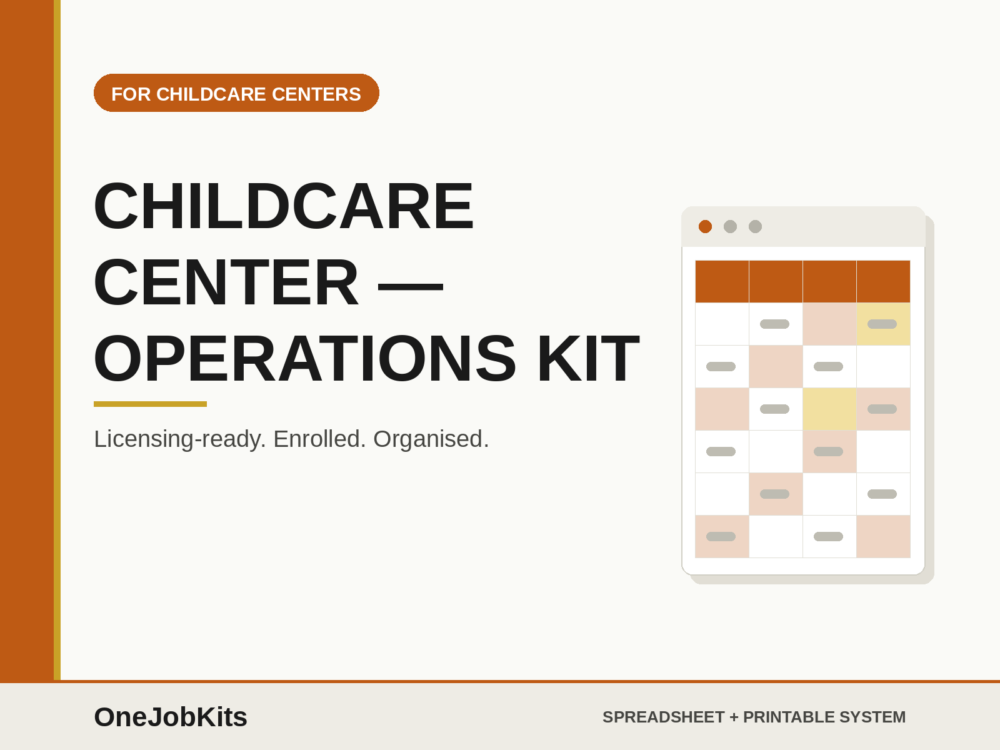

OneJobKits · Kit #17
Childcare Center Licensing-Ready Kit — daycare licensing checklist

Licensing visits don't grade your caring — they grade your files. If you are working through a daycare licensing checklist before a visit, you already know the list: enrollment packets complete, staff files current, training hours logged, incidents documented, meals recorded. A warm, well-run program can still be written up for paperwork.
This page gives you the audit free: the file-by-file self-check. Below it is the kit the checklist comes from — the paperwork system of a childcare program, organised the way an inspection walks through it: enrollment, staff, health & safety, food, and money. General US templates with prompts where your state's rules go — templates and organisers only, not legal, regulatory or childcare advice, and nothing here makes a program licensed or compliant by itself.
Free download — start with the Licensing Visit Self-Check
Licensing Visit Ready? The File-by-File Self-Check is a fillable PDF: the licensing readiness checklist in self-audit form — enrollment files, staff files, logs, postings — plus the staff-file checklist page and a score page. Run it this week and you will know exactly which files would survive a visit and which would not.
Download the free Licensing Visit Self-Check (PDF)Get it on Gumroad instead
What the self-check does not do: it finds the gaps; it does not close them. The full kit below is the closing — the enrollment packet and handbook themselves, the workbook that keeps files and certifications current all year, and the readiness checklist worked as a monthly habit instead of a pre-visit scramble.
What's inside the full kit
- Enrollment Packet (Word + fillable PDF, 96 fields) — the complete intake set: program details, child registration, emergency contacts, medical information & authorisations (with an emergency-care authorisation shell), medication consent shell, photo/media permission, pickup authorisation and an enrollment agreement shell — with shaded STATE / PROGRAM CUSTOMISATION prompt boxes wherever your state's rules may require specific wording or a state-issued form
- Parent Handbook Template (Word + fillable PDF, 36 fields) — a structured handbook shell in 8 sections (welcome, hours, fees, illness, nutrition, guidance & discipline, safety, communication), each with fill-in rule prompts and a box naming the state rule to check, plus a sign-and-return acknowledgement page
- Operations Workbook (spreadsheet, 8 tabs) — START HERE · Enrollment Roster (age calculates from date of birth) · Attendance Log (hours calculate) · Tuition & Fees Ledger (balance plus PAID / DUE / OVERDUE calculate per family) · Meal & Snack Tracker (CACFP-style pattern grid, participation counts, Total Served) · Staff File Tracker (FILE COMPLETE? calculates when all 7 items are Done) · Training Hours Log (totals calculate) · Certification Expiry (days left plus EXPIRED / RENEW WITHIN 30 / OK flags)
- Health & Safety Forms (fillable PDF, 249 fields) — incident/accident report, medication administration log, daily health check log, emergency drill log, cleaning & safety checklist
- Licensing Readiness Checklist (fillable PDF) — the room-by-room / file-by-file pre-visit walkthrough: enrollment files, staff files, health & safety records, food, money & admin, and a room-by-room pass — each section with a gaps-and-fix-by-date field
- Setup Guide (PDF, 8 pages) — the 8 setup steps in order (state rules first), a fill-in worksheet for your state's key numbers, a first-30-days plan, the monthly rhythm, a records & retention organiser, and a 1-hour routine for when the rules change
- Center tier ($179) adds: the CENTER workbook — Multi-Classroom Roster (enrolled per room counted against the capacity you enter), Multi-Classroom Attendance (child:staff ratio calculated and flagged against your entered maximum) and Staff Scheduling (weekly hours totalled, over-40 flagged) — plus the Staff Module Forms (fillable, 166 fields)
A filled example — so you can see the finished thing
This kit ships as a working system rather than a filled sample, so here is what a week inside it looks like for a fictional program — call it Little Acorns, a home daycare with two assistants. The program and people are invented; the calculations are the workbook's own:
| From a sample week | What the system shows |
|---|---|
| Staff File Tracker | One assistant's file shows 6 of 7 items Done — FILE COMPLETE? stays uncalculated-as-complete until the seventh lands, so the gap is a fact, not a memory |
| Certification Expiry | A CPR certification with 18 days left flags RENEW WITHIN 30 in the monthly check — renewed on the program's schedule, not discovered on the inspector's |
| Tuition & Fees Ledger | Each family's balance calculates with its status — PAID, DUE or OVERDUE — so Friday's money picture is read off the sheet, not reconstructed |
| Meal & Snack Tracker | The week's pattern grid and participation counts total into Total Served — the month's meal records already in reviewer shape |
That is the kit's whole promise: the files grade well because the system keeps them graded, every week, not just the week before a visit.
Who it is for
New home-daycare owners preparing for licensing, and directors of small centers replacing a paper filing cabinet with an organised system — programs that need enrollment, staff files, health & safety records, meals and tuition running as one paperwork system.
Who it is not for
Anyone wanting state-specific legal documents or a guarantee of passing inspection. Licensing rules differ by state and change over time; your licensing agency's current rules are the standard, and every form carries the footer: template only — verify against your state's current licensing rules before use.
Questions buyers ask
- Does this kit make our program licensed or guarantee we pass inspection?
- No — it says so in every file. This kit organises your paperwork the way an inspection walks through it, so the files an inspector asks for are complete, current and findable. Licensing decisions and inspection outcomes belong to your state's agency. What the kit removes is the paperwork reason for a citation: the missing form, the expired certification nobody noticed, the incident report written from memory.
- Are my state's rules included?
- No state rules are pre-filled anywhere — deliberately. Licensing rules differ by state and change over time, so the kit is built with prompts instead: shaded STATE / PROGRAM CUSTOMISATION boxes in the templates mark every place your state's rules may require specific wording or a state-issued form, and the setup guide starts with a fill-in worksheet for your state's key numbers. Your licensing agency's current rules are the standard; the kit helps you organise to meet them.
- Home daycare or center — which tier?
- The $129 kit is the complete paperwork system for a home or family childcare program, and for a single-room operation. The Center tier ($179) adds what multi-room programs need: a Multi-Classroom Roster (enrolled counts per room against the licensed capacity you enter), Multi-Classroom Attendance (child:staff ratio calculated and flagged against the maximum you enter from your state's rules), a Staff Scheduling tab (weekly hours totalled, over-40 flagged), and the expanded Staff Module forms (166 fields — file cover sheet, individual training plan, certification record, annual staff file review).
- How do staff files and certifications stay current?
- Three linked trackers. The Staff File Tracker works through the file's 7 items per employee and calculates FILE COMPLETE? only when all seven are Done. The Training Hours Log totals each person's hours. And the Certification Expiry tab calculates days left from each expiry date and flags EXPIRED, RENEW WITHIN 30, or OK — so a lapsed CPR card surfaces in the monthly rhythm, not during a visit.
- What about meals and the CACFP?
- The Meal & Snack Tracker uses a CACFP-style pattern grid with participation counts and Total Served calculated, organised for your own record-keeping; you enter your state's and program's requirements. The kit is not affiliated with the CACFP, and it does not file or claim anything — it keeps the records your program already has to keep, in the shape reviewers expect.
- Word, PDF or spreadsheet — what formats do I get?
- All three, matched to the job: the enrollment packet and parent handbook come as editable Word files with fillable-PDF versions (96 and 36 fields), the operations workbook is a spreadsheet in Excel and Google Sheets formats, and the health & safety forms and the licensing readiness checklist are fillable PDFs (249 fields in the forms set) — printable for the clipboard or fillable on the program's device.
- What does the free self-check cover, and what does the full kit add?
- The free self-check is the licensing readiness checklist in self-audit form — enrollment files, staff files, logs and postings, file by file — plus the staff-file checklist page and a score page. It finds the gaps. The full kit closes them: the enrollment packet and handbook themselves, the workbook that keeps staff files, tuition and meals current, the health & safety forms, and the setup guide's first-30-days plan and monthly rhythm.
Prices
Home / Family: $129 · Center: $179 — one-time payment, digital download. No subscription; the files are yours.
Can't find the kit you need?
We build it. Ask us — first asker gets it at half the shelf price. Tell us the job at onejobkits.com and we will build the kit for it.
Related kits
Please know: these are templates and organisers only — not legal, regulatory, or childcare advice, and not affiliated with any licensing agency or the CACFP. This kit does not make any program licensed or compliant and cannot guarantee the outcome of any inspection. Licensing rules differ by state and change over time; verify every requirement against your state's current licensing rules before use. The sample program (Little Acorns) is fictional.